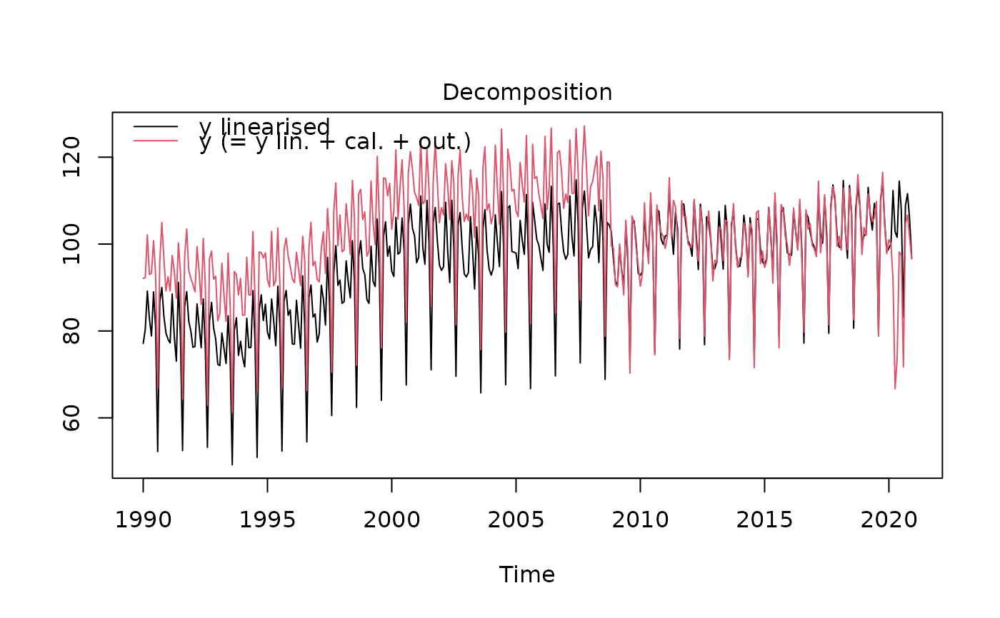
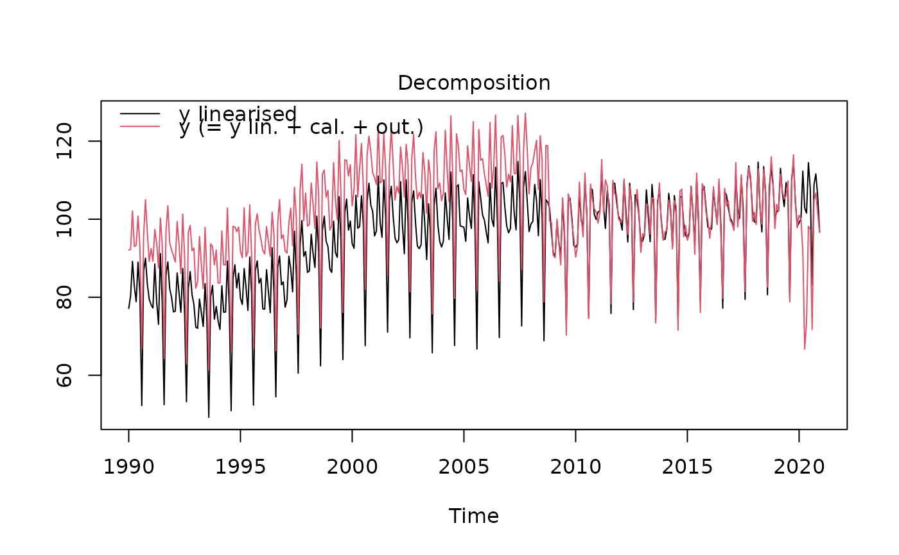

Functions to estimate the seasonally adjusted series (sa) with the TRAMO-SEATS method.
This is achieved by decomposing the time series (y) into the trend-cycle (t), the seasonal component (s) and the irregular component (i).
Calendar-related movements can be corrected in the pre-treatment (TRAMO) step.
tramoseats returns a preformatted result while jtramoseats returns the Java objects of the seasonal adjustment.
Arguments
- series
an univariate time series
- spec
a TRAMO-SEATS model specification. It can be the name (
character) of a pre-defined TRAMO-SEATS 'JDemetra+' model specification (see Details), or an object of classc("SA_spec","TRAMO_SEATS"). The default value is"RSAfull".- userdefined
a
charactervector containing the additional output variables (seeuser_defined_variables).
Value
jtramoseats returns a jSA object that contains the results of the seasonal adjustment without
any formatting. Therefore, the computation is faster than with the function tramoseats. The results of the seasonal
adjustment can be extracted with the function get_indicators.
tramoseats returns an object of class c("SA","TRAMO_SEATS"), that is, a list containing :
- regarima
an object of class
c("regarima","TRAMO_SEATS"). More info in the Value section of the functionregarima.- decomposition
an object of class
"decomposition_SEATS", that is a five-element list:specificationa list with the SEATS algorithm specification. See also the functiontramoseats_spec.modethe decomposition modemodelthe SEATS model list:model, sa, trend, seasonal, transitory, irregular, each element being a matrix of estimated coefficients.linearizedthe time series matrix (mts) with the stochastic series decomposition (input seriesy_lin, seasonally adjusted seriessa_lin, trendt_lin, seasonals_lin, irregulari_lin)componentsthe time series matrix (mts) with the decomposition components (input seriesy_cmp, seasonally adjusted seriessa_cmp, trendt_cmp, seasonal components_cmp, irregulari_cmp)
- final
an object of class
c("final","mts","ts","matrix"). The matrix contains the final results of the seasonal adjustment: the original time series (y)and its forecast (y_f), the trend (t) and its forecast (t_f), the seasonally adjusted series (sa) and its forecast (sa_f), the seasonal component (s)and its forecast (s_f), and the irregular component (i) and its forecast (i_f).- diagnostics
an object of class
"diagnostics", that is a list containing three types of tests results:variance_decompositiona data.frame with the tests results on the relative contribution of the components to the stationary portion of the variance in the original series, after the removal of the long term trend;residuals_testa data.frame with the tests results of the presence of seasonality in the residuals (including the statistic test values, the corresponding p-values and the parameters description);combined_testthe combined tests for stable seasonality in the entire series. The format is a two-element list with:tests_for_stable_seasonality, a data.frame containing the tests results (including the statistic test value, its p-value and the parameters description), andcombined_seasonality_test, the summary.
- user_defined
an object of class
"user_defined": a list containing the additional userdefined variables.
Details
The first step of a seasonal adjustment consists in pre-adjusting the time series with TRAMO. This is done by removing
its deterministic effects (calendar and outliers), using a regression model with ARIMA noise (RegARIMA, see: regarima).
In the second part, the pre-adjusted series is decomposed by the SEATS algorithm into the following components:
trend-cycle (t), seasonal component (s) and irregular component (i). The decomposition can be:
additive (\(y = t + s + i\)) or multiplicative (\(y = t * s * i\), in the latter case pre-adjustment and decomposition are performed
on (\(log(y) = log(t) + log(s) + log(i)\)).
In the TRAMO-SEATS method, the second step - SEATS ("Signal Extraction in ARIMA Time Series") - performs an ARIMA-based decomposition of an observed time series into unobserved components. More information on this method at https://jdemetra-new-documentation.netlify.app/m-seats-decomposition.
The available predefined 'JDemetra+' TRAMO-SEATS model specifications are described in the table below:
| Identifier | | Log/level detection | | Outliers detection | | Calendar effects | | ARIMA | RSA0 | | NA | | NA | |
| NA | | Airline(+mean) | RSA1 | | automatic | | AO/LS/TC | | NA | | Airline(+mean) | RSA2 | |
| automatic | | AO/LS/TC | | 2 td vars + Easter | | Airline(+mean) | RSA3 | | automatic | | AO/LS/TC | | NA | |
| automatic | RSA4 | | automatic | | AO/LS/TC | | 2 td vars + Easter | | automatic | RSA5 | | automatic | |
| AO/LS/TC | | 7 td vars + Easter | | automatic | RSAfull | | automatic | | AO/LS/TC | | automatic | | automatic |
References
More information and examples related to 'JDemetra+' features in the online documentation: https://jdemetra-new-documentation.netlify.app/
BOX G.E.P. and JENKINS G.M. (1970), "Time Series Analysis: Forecasting and Control", Holden-Day, San Francisco.
BOX G.E.P., JENKINS G.M., REINSEL G.C. and LJUNG G.M. (2015), "Time Series Analysis: Forecasting and Control", John Wiley & Sons, Hoboken, N. J., 5th edition.
Examples
# \donttest{
#Example 1
myseries <- ipi_c_eu[, "FR"]
myspec <- tramoseats_spec("RSAfull")
mysa <- tramoseats(myseries, myspec)
mysa
#> RegARIMA
#> y = regression model + arima (2, 1, 0, 0, 1, 1)
#> Log-transformation: no
#> Coefficients:
#> Estimate Std. Error
#> Phi(1) 0.4032 0.051
#> Phi(2) 0.2883 0.051
#> BTheta(1) -0.6641 0.042
#>
#> Estimate Std. Error
#> Week days 0.6994 0.032
#> Leap year 2.3231 0.690
#> Easter [6] -2.5154 0.436
#> AO (5-2011) 13.4679 1.787
#> TC (4-2020) -22.2128 2.205
#> TC (3-2020) -21.0391 2.217
#> AO (5-2000) 6.7386 1.794
#>
#>
#> Residual standard error: 2.326 on 348 degrees of freedom
#> Log likelihood = -816.1, aic = 1654 aicc = 1655, bic(corrected for length) = 1.852
#>
#>
#>
#> Decomposition
#> Model
#> AR : 1 + 0.403230 B + 0.288342 B^2
#> D : 1 - B - B^12 + B^13
#> MA : 1 - 0.664088 B^12
#>
#>
#> SA
#> AR : 1 + 0.403230 B + 0.288342 B^2
#> D : 1 - 2.000000 B + B^2
#> MA : 1 - 0.970348 B + 0.005940 B^2 - 0.005813 B^3 + 0.003576 B^4
#> Innovation variance: 0.7043507
#>
#> Trend
#> D : 1 - 2.000000 B + B^2
#> MA : 1 + 0.033519 B - 0.966481 B^2
#> Innovation variance: 0.06093642
#>
#> Seasonal
#> D : 1 + B + B^2 + B^3 + B^4 + B^5 + B^6 + B^7 + B^8 + B^9 + B^10 + B^11
#> MA : 1 + 1.328957 B + 1.105787 B^2 + 1.185470 B^3 + 1.067845 B^4 + 0.820748 B^5 + 0.632456 B^6 + 0.404457 B^7 + 0.245256 B^8 + 0.001615 B^9 - 0.055617 B^10 - 0.203557 B^11
#> Innovation variance: 0.04290744
#>
#> Transitory
#> AR : 1 + 0.403230 B + 0.288342 B^2
#> MA : 1 - 0.260079 B - 0.739921 B^2
#> Innovation variance: 0.05287028
#>
#> Irregular
#> Innovation variance: 0.2032994
#>
#>
#>
#> Final
#> Last observed values
#> y sa t s i
#> Jan 2020 101.0 102.93775 103.0182 -1.9377453 -0.08043801
#> Feb 2020 100.1 103.53944 103.2312 -3.4394383 0.30818847
#> Mar 2020 91.8 82.47698 103.4998 9.3230241 -21.02286361
#> Apr 2020 66.7 65.77310 103.9608 0.9268969 -38.18766871
#> May 2020 73.7 79.43342 104.7269 -5.7334221 -25.29345247
#> Jun 2020 98.2 88.07766 105.3319 10.1223443 -17.25422206
#> Jul 2020 97.4 92.71048 105.4216 4.6895154 -12.71111705
#> Aug 2020 71.7 97.32129 104.9801 -25.6212858 -7.65880696
#> Sep 2020 104.7 97.44274 104.0807 7.2572622 -6.63793072
#> Oct 2020 106.7 98.20925 103.1711 8.4907485 -4.96183772
#> Nov 2020 101.6 99.98044 102.4813 1.6195550 -2.50088282
#> Dec 2020 96.6 98.99458 101.9735 -2.3945790 -2.97892307
#>
#> Forecasts:
#> y_f sa_f t_f s_f i_f
#> Jan 2021 93.22264 100.1984 101.7578 -6.975740 -1.55946363
#> Feb 2021 96.81455 100.8845 101.7113 -4.069924 -0.82679910
#> Mar 2021 111.72198 100.8668 101.6647 10.855228 -0.79795880
#> Apr 2021 102.76178 101.0716 101.6181 1.690178 -0.54654378
#> May 2021 95.52744 101.2474 101.5716 -5.719910 -0.32422597
#> Jun 2021 111.44221 101.2711 101.5250 10.171157 -0.25395653
#> Jul 2021 103.57813 101.2947 101.4784 2.283395 -0.18370915
#> Aug 2021 78.21363 101.3135 101.4319 -23.099833 -0.11841662
#> Sep 2021 108.57631 101.3000 101.3853 7.276282 -0.08528380
#> Oct 2021 107.32040 101.2771 101.3387 6.043321 -0.06166933
#> Nov 2021 105.33458 101.2505 101.2922 4.084088 -0.04168414
#> Dec 2021 98.79675 101.2164 101.2456 -2.419656 -0.02920922
#>
#>
#> Diagnostics
#> Relative contribution of the components to the stationary
#> portion of the variance in the original series,
#> after the removal of the long term trend
#> Trend computed by Hodrick-Prescott filter (cycle length = 8.0 years)
#> Component
#> Cycle 6.087
#> Seasonal 80.528
#> Irregular 0.965
#> TD & Hol. 3.590
#> Others 8.102
#> Total 99.271
#>
#> Combined test in the entire series
#> Non parametric tests for stable seasonality
#> P.value
#> Kruskall-Wallis test 0.00
#> Test for the presence of seasonality assuming stability 0.00
#> Evolutive seasonality test 0.01
#>
#> Identifiable seasonality present
#>
#> Residual seasonality tests
#> P.value
#> qs test on sa 1.000
#> qs test on i 1.000
#> f-test on sa (seasonal dummies) 1.000
#> f-test on i (seasonal dummies) 1.000
#> Residual seasonality (entire series) 1.000
#> Residual seasonality (last 3 years) 0.974
#> f-test on sa (td) 0.152
#> f-test on i (td) 0.224
#>
#>
#> Additional output variables
# Equivalent to:
mysa1 <- tramoseats(myseries, spec = "RSAfull")
mysa1
#> RegARIMA
#> y = regression model + arima (2, 1, 0, 0, 1, 1)
#> Log-transformation: no
#> Coefficients:
#> Estimate Std. Error
#> Phi(1) 0.4032 0.051
#> Phi(2) 0.2883 0.051
#> BTheta(1) -0.6641 0.042
#>
#> Estimate Std. Error
#> Week days 0.6994 0.032
#> Leap year 2.3231 0.690
#> Easter [6] -2.5154 0.436
#> AO (5-2011) 13.4679 1.787
#> TC (4-2020) -22.2128 2.205
#> TC (3-2020) -21.0391 2.217
#> AO (5-2000) 6.7386 1.794
#>
#>
#> Residual standard error: 2.326 on 348 degrees of freedom
#> Log likelihood = -816.1, aic = 1654 aicc = 1655, bic(corrected for length) = 1.852
#>
#>
#>
#> Decomposition
#> Model
#> AR : 1 + 0.403230 B + 0.288342 B^2
#> D : 1 - B - B^12 + B^13
#> MA : 1 - 0.664088 B^12
#>
#>
#> SA
#> AR : 1 + 0.403230 B + 0.288342 B^2
#> D : 1 - 2.000000 B + B^2
#> MA : 1 - 0.970348 B + 0.005940 B^2 - 0.005813 B^3 + 0.003576 B^4
#> Innovation variance: 0.7043507
#>
#> Trend
#> D : 1 - 2.000000 B + B^2
#> MA : 1 + 0.033519 B - 0.966481 B^2
#> Innovation variance: 0.06093642
#>
#> Seasonal
#> D : 1 + B + B^2 + B^3 + B^4 + B^5 + B^6 + B^7 + B^8 + B^9 + B^10 + B^11
#> MA : 1 + 1.328957 B + 1.105787 B^2 + 1.185470 B^3 + 1.067845 B^4 + 0.820748 B^5 + 0.632456 B^6 + 0.404457 B^7 + 0.245256 B^8 + 0.001615 B^9 - 0.055617 B^10 - 0.203557 B^11
#> Innovation variance: 0.04290744
#>
#> Transitory
#> AR : 1 + 0.403230 B + 0.288342 B^2
#> MA : 1 - 0.260079 B - 0.739921 B^2
#> Innovation variance: 0.05287028
#>
#> Irregular
#> Innovation variance: 0.2032994
#>
#>
#>
#> Final
#> Last observed values
#> y sa t s i
#> Jan 2020 101.0 102.93775 103.0182 -1.9377453 -0.08043801
#> Feb 2020 100.1 103.53944 103.2312 -3.4394383 0.30818847
#> Mar 2020 91.8 82.47698 103.4998 9.3230241 -21.02286361
#> Apr 2020 66.7 65.77310 103.9608 0.9268969 -38.18766871
#> May 2020 73.7 79.43342 104.7269 -5.7334221 -25.29345247
#> Jun 2020 98.2 88.07766 105.3319 10.1223443 -17.25422206
#> Jul 2020 97.4 92.71048 105.4216 4.6895154 -12.71111705
#> Aug 2020 71.7 97.32129 104.9801 -25.6212858 -7.65880696
#> Sep 2020 104.7 97.44274 104.0807 7.2572622 -6.63793072
#> Oct 2020 106.7 98.20925 103.1711 8.4907485 -4.96183772
#> Nov 2020 101.6 99.98044 102.4813 1.6195550 -2.50088282
#> Dec 2020 96.6 98.99458 101.9735 -2.3945790 -2.97892307
#>
#> Forecasts:
#> y_f sa_f t_f s_f i_f
#> Jan 2021 93.22264 100.1984 101.7578 -6.975740 -1.55946363
#> Feb 2021 96.81455 100.8845 101.7113 -4.069924 -0.82679910
#> Mar 2021 111.72198 100.8668 101.6647 10.855228 -0.79795880
#> Apr 2021 102.76178 101.0716 101.6181 1.690178 -0.54654378
#> May 2021 95.52744 101.2474 101.5716 -5.719910 -0.32422597
#> Jun 2021 111.44221 101.2711 101.5250 10.171157 -0.25395653
#> Jul 2021 103.57813 101.2947 101.4784 2.283395 -0.18370915
#> Aug 2021 78.21363 101.3135 101.4319 -23.099833 -0.11841662
#> Sep 2021 108.57631 101.3000 101.3853 7.276282 -0.08528380
#> Oct 2021 107.32040 101.2771 101.3387 6.043321 -0.06166933
#> Nov 2021 105.33458 101.2505 101.2922 4.084088 -0.04168414
#> Dec 2021 98.79675 101.2164 101.2456 -2.419656 -0.02920922
#>
#>
#> Diagnostics
#> Relative contribution of the components to the stationary
#> portion of the variance in the original series,
#> after the removal of the long term trend
#> Trend computed by Hodrick-Prescott filter (cycle length = 8.0 years)
#> Component
#> Cycle 6.087
#> Seasonal 80.528
#> Irregular 0.965
#> TD & Hol. 3.590
#> Others 8.102
#> Total 99.271
#>
#> Combined test in the entire series
#> Non parametric tests for stable seasonality
#> P.value
#> Kruskall-Wallis test 0.00
#> Test for the presence of seasonality assuming stability 0.00
#> Evolutive seasonality test 0.01
#>
#> Identifiable seasonality present
#>
#> Residual seasonality tests
#> P.value
#> qs test on sa 1.000
#> qs test on i 1.000
#> f-test on sa (seasonal dummies) 1.000
#> f-test on i (seasonal dummies) 1.000
#> Residual seasonality (entire series) 1.000
#> Residual seasonality (last 3 years) 0.974
#> f-test on sa (td) 0.152
#> f-test on i (td) 0.224
#>
#>
#> Additional output variables
#Example 2
var1 <- ts(rnorm(length(myseries))*10, start = start(myseries), frequency = 12)
var2 <- ts(rnorm(length(myseries))*100, start = start(myseries), frequency = 12)
var <- ts.union(var1, var2)
myspec2 <- tramoseats_spec(myspec, tradingdays.mauto = "Unused",
tradingdays.option = "WorkingDays",
easter.type = "Standard",
automdl.enabled = FALSE, arima.mu = TRUE,
usrdef.varEnabled = TRUE, usrdef.var = var)
s_preVar(myspec2)
#> $series
#> var1 var2
#> Jan 1990 -12.53055561 116.7948978
#> Feb 1990 17.65028630 76.9885462
#> Mar 1990 -1.59322027 -16.3115808
#> Apr 1990 8.98874217 127.5265346
#> May 1990 -7.04995332 18.0887984
#> Jun 1990 11.26896570 147.4360522
#> Jul 1990 -19.74322214 -151.7434724
#> Aug 1990 -12.44772830 30.4400356
#> Sep 1990 10.31250388 10.7467387
#> Oct 1990 5.79097050 -122.4792573
#> Nov 1990 -10.37890010 44.8519979
#> Dec 1990 15.61622325 50.8070951
#> Jan 1991 1.01959622 35.0212641
#> Feb 1991 23.24238302 75.8213674
#> Mar 1991 23.25851550 29.0928722
#> Apr 1991 -12.93149956 2.2859592
#> May 1991 -0.45018855 -20.8143110
#> Jun 1991 1.95694234 -26.3611625
#> Jul 1991 4.80623395 -198.4135796
#> Aug 1991 20.17342464 -35.7620220
#> Sep 1991 11.95608651 -45.4297352
#> Oct 1991 6.56575520 28.6157701
#> Nov 1991 10.26297846 -28.9179390
#> Dec 1991 5.20192659 51.1904574
#> Jan 1992 11.20615649 -110.4334548
#> Feb 1992 3.99897655 -22.2474789
#> Mar 1992 -9.84527658 -145.2151487
#> Apr 1992 -5.02562184 39.9298770
#> May 1992 9.87148440 142.8571193
#> Jun 1992 21.91481010 -48.2140994
#> Jul 1992 -1.65042212 99.2388183
#> Aug 1992 -6.86040800 -116.3700651
#> Sep 1992 9.41399410 162.0789124
#> Oct 1992 -1.64042843 -10.7448152
#> Nov 1992 -13.02339410 -77.3206773
#> Dec 1992 -7.23484004 -73.6278805
#> Jan 1993 13.90088740 81.5706680
#> Feb 1993 6.81840626 220.3036444
#> Mar 1993 4.68260280 -67.1046628
#> Apr 1993 4.20921089 -42.1589604
#> May 1993 -8.00331265 -77.7749125
#> Jun 1993 -4.88457510 56.1542375
#> Jul 1993 5.39004516 -222.2507056
#> Aug 1993 14.35171017 -69.5413671
#> Sep 1993 -2.61838719 -38.3549957
#> Oct 1993 -14.18623721 205.8566983
#> Nov 1993 -5.13792720 -110.7988264
#> Dec 1993 7.72301225 -95.5938774
#> Jan 1994 14.03682339 -63.5768417
#> Feb 1994 -0.15804912 76.6757452
#> Mar 1994 -10.23289556 68.6958102
#> Apr 1994 -21.16392160 172.1426693
#> May 1994 1.50371437 85.1309252
#> Jun 1994 -5.20871198 42.9908280
#> Jul 1994 -9.05454844 -105.5277738
#> Aug 1994 -7.49986903 -4.5880971
#> Sep 1994 -7.86576021 -13.1881384
#> Oct 1994 -5.59681870 -31.9463558
#> Nov 1994 -13.90851305 47.3606163
#> Dec 1994 -2.82630602 81.2516099
#> Jan 1995 -4.80284997 25.6612328
#> Feb 1995 -9.67621014 -214.8765835
#> Mar 1995 17.77940980 69.0108551
#> Apr 1995 -0.69089037 -177.2443831
#> May 1995 -4.26188249 54.6294039
#> Jun 1995 -22.51403727 1.8945820
#> Jul 1995 -9.14170952 -74.8702215
#> Aug 1995 -8.00524582 -79.4321035
#> Sep 1995 -7.53305904 30.0784394
#> Oct 1995 6.60649173 5.4665853
#> Nov 1995 17.27695639 36.4229108
#> Dec 1995 7.82678579 -116.5186698
#> Jan 1996 -7.81818406 26.0555826
#> Feb 1996 -1.25797549 -241.7116277
#> Mar 1996 10.15236070 114.9085017
#> Apr 1996 2.94676272 120.6579247
#> May 1996 -2.96458790 -43.1982134
#> Jun 1996 -8.22289822 10.6856739
#> Jul 1996 16.91546077 48.6195719
#> Aug 1996 -14.76545705 -155.3458324
#> Sep 1996 9.29693563 -108.3142387
#> Oct 1996 -6.13832093 -51.6012028
#> Nov 1996 6.17598091 -20.7770980
#> Dec 1996 -8.30615177 90.7281411
#> Jan 1997 -11.33375927 81.1425127
#> Feb 1997 -1.56378319 -99.1193254
#> Mar 1997 -2.43091747 -45.4306958
#> Apr 1997 -11.29264413 -31.5728538
#> May 1997 -0.62192485 -100.6333083
#> Jun 1997 4.87082631 -101.6594660
#> Jul 1997 -0.54636953 202.9964782
#> Aug 1997 -1.98624209 -68.7638434
#> Sep 1997 -14.53375000 -158.7906854
#> Oct 1997 1.98434624 101.6938102
#> Nov 1997 -13.91001690 -72.3102186
#> Dec 1997 -22.44235104 -145.3485040
#> Jan 1998 -2.31792440 -214.0815482
#> Feb 1998 -6.86551360 13.4854427
#> Mar 1998 -4.82915280 66.1997776
#> Apr 1998 -22.43508266 49.4613170
#> May 1998 -3.81078571 -152.6643655
#> Jun 1998 1.16047733 -11.0216005
#> Jul 1998 8.92492885 246.8741282
#> Aug 1998 18.08520401 -56.3543434
#> Sep 1998 10.79663512 -144.5853422
#> Oct 1998 14.52055280 -47.6555776
#> Nov 1998 25.56923589 101.4600468
#> Dec 1998 10.72728070 -11.8020034
#> Jan 1999 -11.78914989 -35.4321844
#> Feb 1999 10.75417132 28.7255843
#> Mar 1999 0.53855088 1.8012616
#> Apr 1999 -2.34343833 -89.8423976
#> May 1999 9.50759734 144.4736492
#> Jun 1999 0.73021934 -53.7799146
#> Jul 1999 6.63527998 -48.2359998
#> Aug 1999 -8.16198742 -73.5619613
#> Sep 1999 2.95544263 -1.5235256
#> Oct 1999 13.46357662 -28.5060838
#> Nov 1999 -2.80015436 -77.0895994
#> Dec 1999 -0.63043628 -191.1522944
#> Jan 2000 -1.32833831 17.7899655
#> Feb 2000 6.29361770 19.6320685
#> Mar 2000 -6.41231532 5.0044155
#> Apr 2000 -1.04018599 -104.5274438
#> May 2000 -13.88668827 -13.6682386
#> Jun 2000 4.37214206 122.7500609
#> Jul 2000 3.15862087 -19.3865193
#> Aug 2000 1.94610535 -199.3071105
#> Sep 2000 -4.55762127 -42.9905670
#> Oct 2000 8.12534989 -65.1916325
#> Nov 2000 2.75042593 -132.2755316
#> Dec 2000 0.06009411 -61.1002356
#> Jan 2001 20.10186412 -43.3484772
#> Feb 2001 3.13808823 22.1131620
#> Mar 2001 -8.46162712 41.4635297
#> Apr 2001 -1.34641045 100.3519632
#> May 2001 14.70832200 -262.6042237
#> Jun 2001 -14.75125736 -87.3534926
#> Jul 2001 2.04499683 -77.3710833
#> Aug 2001 -3.41768421 59.3058550
#> Sep 2001 18.42157648 45.3563341
#> Oct 2001 -2.05909535 -48.9626711
#> Nov 2001 15.02231278 -66.6085502
#> Dec 2001 2.42188060 -108.9654228
#> Jan 2002 0.53455720 -104.0906952
#> Feb 2002 -1.25146310 50.1606680
#> Mar 2002 2.47787238 4.1353765
#> Apr 2002 -6.26612578 -5.3081681
#> May 2002 6.82877534 -152.7399081
#> Jun 2002 5.89606056 -16.3568520
#> Jul 2002 -8.14967320 -213.5094918
#> Aug 2002 -3.45798987 -13.6833591
#> Sep 2002 0.56529047 -290.4220640
#> Oct 2002 -5.66766181 33.7012645
#> Nov 2002 -0.42837457 76.4510656
#> Dec 2002 -12.81559297 -66.9378190
#> Jan 2003 9.67582242 -16.0968872
#> Feb 2003 10.29048853 150.7261029
#> Mar 2003 -21.66425254 -12.1693844
#> Apr 2003 -3.03348223 -24.3414776
#> May 2003 1.79268039 70.8157194
#> Jun 2003 14.27395820 -48.0039667
#> Jul 2003 -6.19946595 -31.6551268
#> Aug 2003 -1.31842450 51.0471244
#> Sep 2003 2.67551749 -26.6264354
#> Oct 2003 -14.56778518 63.6432097
#> Nov 2003 2.34340520 -101.3955594
#> Dec 2003 -9.51528054 93.2230747
#> Jan 2004 18.98439401 -65.0788332
#> Feb 2004 -10.42770546 43.6178180
#> Mar 2004 -13.33746286 -16.4089402
#> Apr 2004 17.64724810 126.8656386
#> May 2004 5.06063430 41.5432504
#> Jun 2004 -6.55292217 -4.8104283
#> Jul 2004 6.67508839 19.8292951
#> Aug 2004 13.72876146 -38.8687305
#> Sep 2004 5.94581979 -45.2232286
#> Oct 2004 8.09307437 -13.9421427
#> Nov 2004 -9.29351716 -132.5197658
#> Dec 2004 -9.68882573 75.4069518
#> Jan 2005 -5.63483049 135.7852830
#> Feb 2005 18.88488707 -122.0784861
#> Mar 2005 -1.16769607 -56.7918662
#> Apr 2005 -0.49778439 -118.8849569
#> May 2005 4.12530895 -101.2275885
#> Jun 2005 3.39006216 -43.2531486
#> Jul 2005 -2.19463937 34.5706392
#> Aug 2005 -2.79921977 19.0927596
#> Sep 2005 -1.84466622 128.7488578
#> Oct 2005 -11.31041190 -21.3504255
#> Nov 2005 5.99068143 59.3561305
#> Dec 2005 -3.45024460 -181.5799874
#> Jan 2006 3.28683628 -46.0524573
#> Feb 2006 -0.02001793 74.6337982
#> Mar 2006 -16.43640470 89.8995877
#> Apr 2006 8.30144580 -115.5462161
#> May 2006 13.11300782 -28.2423821
#> Jun 2006 -7.25708977 -0.3256871
#> Jul 2006 -3.88345065 151.5028276
#> Aug 2006 -10.42408354 30.9380270
#> Sep 2006 7.39965537 -46.0958821
#> Oct 2006 -3.79227989 29.3447573
#> Nov 2006 8.55040406 7.0972006
#> Dec 2006 9.29726811 -231.3759365
#> Jan 2007 -5.11420306 19.2706032
#> Feb 2007 5.75606727 -35.2441451
#> Mar 2007 -11.79760738 -153.3292787
#> Apr 2007 8.73922726 -173.4069209
#> May 2007 7.52654962 14.1892735
#> Jun 2007 6.31952946 -21.9599601
#> Jul 2007 4.89051671 59.1564494
#> Aug 2007 4.93466172 24.0247909
#> Sep 2007 -20.24668739 -37.2564160
#> Oct 2007 -1.15346633 26.4545865
#> Nov 2007 4.02961199 65.1544488
#> Dec 2007 -13.29553215 -41.8319774
#> Jan 2008 8.50032275 -207.8760627
#> Feb 2008 11.05681923 59.0955041
#> Mar 2008 4.04141906 -70.5640744
#> Apr 2008 -1.23141511 98.6688400
#> May 2008 4.48847720 3.2359045
#> Jun 2008 20.68153748 -49.6043573
#> Jul 2008 -12.49536842 167.3249059
#> Aug 2008 -2.19531175 -105.1266614
#> Sep 2008 10.32002706 2.8015821
#> Oct 2008 -15.82876585 52.6890091
#> Nov 2008 0.84967784 127.0786920
#> Dec 2008 12.10794619 -58.7592446
#> Jan 2009 -0.23462572 -43.0471444
#> Feb 2009 0.84693918 -2.2966263
#> Mar 2009 -3.25065508 7.4873923
#> Apr 2009 5.05923564 -208.9995616
#> May 2009 4.15272046 102.3897173
#> Jun 2009 -11.77413897 62.3240132
#> Jul 2009 0.33445330 -136.7330008
#> Aug 2009 -6.79873381 4.4589523
#> Sep 2009 9.77814031 36.6273799
#> Oct 2009 17.72477385 -17.8469697
#> Nov 2009 2.77933293 210.1677593
#> Dec 2009 -4.81019306 -24.2409658
#> Jan 2010 -17.91060602 1.1717215
#> Feb 2010 5.30663702 -277.8433689
#> Mar 2010 -11.24766175 27.4491395
#> Apr 2010 0.40226151 -62.2731928
#> May 2010 -11.87967396 -102.7831717
#> Jun 2010 22.48831114 72.8990109
#> Jul 2010 15.53161749 -39.2461437
#> Aug 2010 3.23021948 35.7845575
#> Sep 2010 0.22759699 -75.5189860
#> Oct 2010 -2.49427874 6.6689713
#> Nov 2010 -21.72319120 25.7355650
#> Dec 2010 -13.39659118 -9.0963056
#> Jan 2011 -9.80485754 -73.0508027
#> Feb 2011 -17.92780676 -39.5841246
#> Mar 2011 5.22812809 -141.5808515
#> Apr 2011 -15.91328479 -10.8938918
#> May 2011 8.06263133 7.4299910
#> Jun 2011 -6.83813068 45.0190145
#> Jul 2011 3.34388057 38.7345818
#> Aug 2011 9.43006421 -25.8295014
#> Sep 2011 -8.98387674 152.3490603
#> Oct 2011 7.67335868 55.1343438
#> Nov 2011 0.92338676 32.9901773
#> Dec 2011 -3.51696026 17.2922695
#> Jan 2012 1.15373005 42.6641536
#> Feb 2012 -1.43261353 -81.3699585
#> Mar 2012 -24.19820346 65.1355094
#> Apr 2012 -11.63794035 91.9981796
#> May 2012 1.03426653 39.0101788
#> Jun 2012 -1.26143326 95.6724098
#> Jul 2012 -1.41743410 -16.9973563
#> Aug 2012 9.10437035 -37.9977916
#> Sep 2012 14.77617914 14.4207957
#> Oct 2012 16.46242603 -71.8284089
#> Nov 2012 -1.79993025 20.6108648
#> Dec 2012 9.76856385 -36.7334361
#> Jan 2013 -1.86602735 78.8442877
#> Feb 2013 -0.34098393 -31.0952795
#> Mar 2013 14.88732203 -85.9140099
#> Apr 2013 -1.89839298 108.5279663
#> May 2013 -10.89309617 -78.4779324
#> Jun 2013 3.71089482 -122.0960234
#> Jul 2013 -10.27770114 -105.6691432
#> Aug 2013 0.14915848 -99.6890554
#> Sep 2013 -5.20298562 -67.2605085
#> Oct 2013 -0.52244428 66.5268367
#> Nov 2013 -14.35079571 223.6077683
#> Dec 2013 -3.27979065 -60.1798169
#> Jan 2014 -12.85347619 -29.1617742
#> Feb 2014 -4.25537239 -84.0974862
#> Mar 2014 2.57475661 203.1699515
#> Apr 2014 2.01319396 42.9372125
#> May 2014 4.82077401 81.1017521
#> Jun 2014 5.06636590 -17.4299949
#> Jul 2014 -5.26691357 -31.6371483
#> Aug 2014 -5.64773980 -49.3001895
#> Sep 2014 0.40398035 19.0778474
#> Oct 2014 -2.00781380 -110.3744984
#> Nov 2014 -9.04217194 -10.6413314
#> Dec 2014 1.66655524 145.8992713
#> Jan 2015 -5.24284783 -30.7474298
#> Feb 2015 0.17563903 75.7181411
#> Mar 2015 9.48517187 -171.0825390
#> Apr 2015 2.70265784 59.5309608
#> May 2015 -1.60941404 -206.7966650
#> Jun 2015 19.65199507 -8.5739756
#> Jul 2015 3.95548042 3.2286550
#> Aug 2015 8.73719370 28.9686397
#> Sep 2015 4.72324156 80.8938069
#> Oct 2015 -14.85226449 32.6262471
#> Nov 2015 -8.36162299 -170.3857479
#> Dec 2015 -6.46269212 52.5504589
#> Jan 2016 -0.47437037 -80.3033850
#> Feb 2016 1.67759989 -23.7655721
#> Mar 2016 -0.99738669 85.5349059
#> Apr 2016 0.85996455 -46.9487045
#> May 2016 -3.72574031 11.8012784
#> Jun 2016 1.81332543 124.7441555
#> Jul 2016 -9.06806411 -68.8397299
#> Aug 2016 5.91157152 -138.3569575
#> Sep 2016 7.92513233 -4.2932415
#> Oct 2016 0.76872383 -20.9234230
#> Nov 2016 -0.67837199 -146.6993454
#> Dec 2016 4.33288047 223.5778380
#> Jan 2017 0.49095403 -62.5144963
#> Feb 2017 -0.32800048 -116.7913785
#> Mar 2017 -5.10924776 14.9528831
#> Apr 2017 3.56430539 86.1319900
#> May 2017 4.17946136 -104.6203407
#> Jun 2017 5.79205261 17.2260011
#> Jul 2017 -14.75158654 -30.7020751
#> Aug 2017 13.23805231 90.3345610
#> Sep 2017 10.30621466 98.5248694
#> Oct 2017 3.17373893 164.3828484
#> Nov 2017 -11.11903788 81.4559724
#> Dec 2017 6.21211169 82.5113161
#> Jan 2018 18.09108552 -34.5773922
#> Feb 2018 11.13986006 41.1147335
#> Mar 2018 4.65350534 -64.3214383
#> Apr 2018 -10.68629729 94.2059477
#> May 2018 2.55940284 46.9591784
#> Jun 2018 -7.77218934 -66.2112238
#> Jul 2018 -9.50318237 -30.9471102
#> Aug 2018 12.30516332 79.4574264
#> Sep 2018 -2.90321330 -91.4850956
#> Oct 2018 -12.45249585 -46.5520309
#> Nov 2018 -9.25110623 81.9669363
#> Dec 2018 -3.51758271 152.1035738
#> Jan 2019 -0.41630828 26.5354790
#> Feb 2019 7.29297422 61.9066940
#> Mar 2019 2.93403029 47.1080837
#> Apr 2019 35.86945476 46.3144213
#> May 2019 7.55743006 -16.0161363
#> Jun 2019 4.00127303 -3.5685472
#> Jul 2019 8.29345713 -57.4684816
#> Aug 2019 -3.05136243 84.5350017
#> Sep 2019 7.10103322 -58.1766123
#> Oct 2019 4.38613817 -50.2357106
#> Nov 2019 3.58223697 108.8076265
#> Dec 2019 -1.24237651 -39.2953019
#> Jan 2020 -6.93216085 -66.0461119
#> Feb 2020 5.74346528 -14.9025127
#> Mar 2020 -2.17159515 -87.5485298
#> Apr 2020 30.37581163 169.9001571
#> May 2020 -15.91667131 6.8190262
#> Jun 2020 -6.73689236 53.3187580
#> Jul 2020 7.28572805 -8.0948993
#> Aug 2020 -11.51562235 244.6781428
#> Sep 2020 -11.50775213 38.3899034
#> Oct 2020 -1.32075277 -105.2171578
#> Nov 2020 -5.81046358 -172.2233827
#> Dec 2020 16.61350032 -63.0819250
#>
#> $description
#> type coeff
#> var1 Undefined NA
#> var2 Undefined NA
#>
mysa2 <- tramoseats(myseries, myspec2,
userdefined = c("decomposition.sa_lin_f",
"decomposition.sa_lin_e"))
mysa2
#> RegARIMA
#> y = regression model + arima (0, 1, 1, 0, 1, 1)
#> Log-transformation: no
#> Coefficients:
#> Estimate Std. Error
#> Theta(1) -0.6217 0.043
#> BTheta(1) -0.6693 0.042
#>
#> Estimate Std. Error
#> Mean 1.388e-03 0.016
#> r.var1 2.032e-03 0.011
#> r.var2 7.035e-04 0.001
#> Monday 5.799e-01 0.239
#> Tuesday 8.439e-01 0.239
#> Wednesday 1.068e+00 0.240
#> Thursday 3.851e-02 0.240
#> Friday 8.572e-01 0.242
#> Saturday -1.549e+00 0.238
#> Leap year 2.161e+00 0.727
#> Easter [6] -2.175e+00 0.496
#> TC (4-2020) -2.133e+01 2.238
#> TC (3-2020) -2.119e+01 2.223
#> AO (5-2011) 1.287e+01 1.916
#> LS (11-2008) -1.249e+01 1.655
#>
#>
#> Residual standard error: 2.241 on 341 degrees of freedom
#> Log likelihood = -802.9, aic = 1642 aicc = 1644, bic(corrected for length) = 1.893
#>
#>
#>
#> Decomposition
#> Model
#> D : 1 - B - B^12 + B^13
#> MA : 1 - 0.621691 B - 0.669330 B^12 + 0.416116 B^13
#>
#>
#> SA
#> D : 1 - 2.000000 B + B^2
#> MA : 1 - 1.591988 B + 0.604331 B^2
#> Innovation variance: 0.7134019
#>
#> Trend
#> D : 1 - 2.000000 B + B^2
#> MA : 1 + 0.032818 B - 0.967182 B^2
#> Innovation variance: 0.02522463
#>
#> Seasonal
#> D : 1 + B + B^2 + B^3 + B^4 + B^5 + B^6 + B^7 + B^8 + B^9 + B^10 + B^11
#> MA : 1 + 0.843770 B + 0.604408 B^2 + 0.338179 B^3 + 0.083129 B^4 - 0.136631 B^5 - 0.307818 B^6 - 0.425620 B^7 - 0.491945 B^8 - 0.514346 B^9 - 0.505950 B^10 - 0.487176 B^11
#> Innovation variance: 0.03081912
#>
#> Irregular
#> Innovation variance: 0.4555274
#>
#>
#>
#> Final
#> Last observed values
#> y sa t s i
#> Jan 2020 101.0 102.81851 103.3050 -1.8185112 -0.486470495
#> Feb 2020 100.1 103.40318 103.4075 -3.3031783 -0.004340668
#> Mar 2020 91.8 82.29661 103.5385 9.5033890 -21.241901161
#> Apr 2020 66.7 66.06809 103.7556 0.6319142 -37.687541289
#> May 2020 73.7 79.34590 104.1076 -5.6458990 -24.761732349
#> Jun 2020 98.2 88.14489 104.4019 10.0551101 -16.257054491
#> Jul 2020 97.4 92.97395 104.4587 4.4260520 -11.484778092
#> Aug 2020 71.7 97.35139 104.2406 -25.6513919 -6.889254716
#> Sep 2020 104.7 97.14200 103.8112 7.5580020 -6.669192528
#> Oct 2020 106.7 98.51739 103.3804 8.1826079 -4.863017170
#> Nov 2020 101.6 100.22161 103.0371 1.3783873 -2.815453896
#> Dec 2020 96.6 99.16099 102.7914 -2.5609868 -3.630382907
#>
#> Forecasts:
#> y_f sa_f t_f s_f i_f
#> Jan 2021 94.94239 101.2431 102.7025 -6.384568 -1.45941514
#> Feb 2021 97.76857 101.6750 102.6965 -3.955806 -1.02159060
#> Mar 2021 113.34558 101.9756 102.6907 11.294470 -0.71511342
#> Apr 2021 103.58903 102.1844 102.6849 1.443977 -0.50057939
#> May 2021 96.50160 102.3289 102.6793 -5.901187 -0.35040557
#> Jun 2021 113.08768 102.4285 102.6738 10.609817 -0.24528390
#> Jul 2021 104.43952 102.4967 102.6684 1.863487 -0.17169873
#> Aug 2021 79.35314 102.5429 102.6631 -23.174022 -0.12018911
#> Sep 2021 109.38591 102.5738 102.6580 6.750815 -0.08413238
#> Oct 2021 108.97962 102.5940 102.6529 6.296152 -0.05889266
#> Nov 2021 106.76502 102.6067 102.6480 4.072512 -0.04122487
#> Dec 2021 100.05011 102.6143 102.6431 -2.598606 -0.02885741
#>
#>
#> Diagnostics
#> Relative contribution of the components to the stationary
#> portion of the variance in the original series,
#> after the removal of the long term trend
#> Trend computed by Hodrick-Prescott filter (cycle length = 8.0 years)
#> Component
#> Cycle 1.828
#> Seasonal 58.835
#> Irregular 0.999
#> TD & Hol. 2.524
#> Others 33.791
#> Total 97.976
#>
#> Combined test in the entire series
#> Non parametric tests for stable seasonality
#> P.value
#> Kruskall-Wallis test 0.000
#> Test for the presence of seasonality assuming stability 0.000
#> Evolutive seasonality test 0.068
#>
#> Identifiable seasonality present
#>
#> Residual seasonality tests
#> P.value
#> qs test on sa 1.000
#> qs test on i 1.000
#> f-test on sa (seasonal dummies) 1.000
#> f-test on i (seasonal dummies) 1.000
#> Residual seasonality (entire series) 1.000
#> Residual seasonality (last 3 years) 0.961
#> f-test on sa (td) 0.929
#> f-test on i (td) 1.000
#>
#>
#> Additional output variables
#> Names of additional variables (2):
#> decomposition.sa_lin_f, decomposition.sa_lin_e
plot(mysa2)
plot(mysa2$regarima)
 
plot(mysa2$decomposition)
# }

plot(mysa2$decomposition)
# }